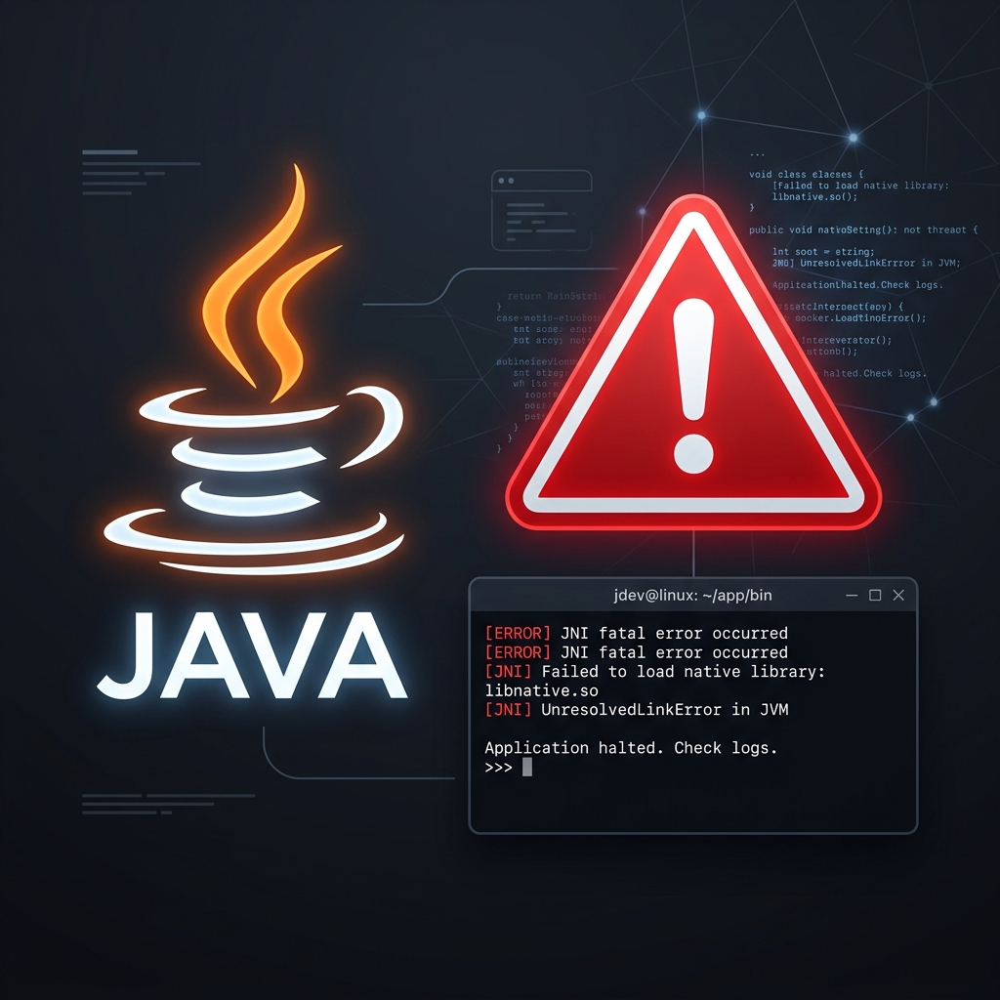

Solución: 'JNI Error has occurred' o 'Java Exception' al abrir Minecraft

El error de instalación más común de Minecraft
Es muy probable que alguna vez hayas intentado abrir una versión de Minecraft (como la 1.18 o superior) usando launchers antiguos o el Minecraft oficial, y te haya saltado una ventana emergente diciendo: "A JNI error has occurred, please check your installation and try again".
¿Por qué sucede este error?
Este problema ocurre casi exclusivamente por una razón: Estás intentando abrir una versión moderna de Minecraft usando una versión anticuada de Java (Java 8).
Minecraft cambió sus requisitos internos. Las versiones desde la 1.8 hasta la 1.16 usan Java 8. La 1.17 usa Java 16. La 1.18 a 1.20 usa Java 17, y la 1.20.5 en adelante requiere Java 21.
La Solución Manual
Desinstala todas las versiones de Java de tu PC y ve a la página de Oracle o Adoptium a buscar, descargar e instalar manualmente el Java 17 o 21, configurando las variables de entorno.
La Solución Automática (Recomendada)
Usa LFZ Launcher. Nuestro launcher cuenta con un motor inteligente que analiza la versión de Minecraft que quieres abrir y descarga de forma portable y automática la versión exacta de Java (8, 17 o 21) en segundo plano, sin que tengas que instalar absolutamente nada en Windows. ¡Solo dale a "Jugar" y dile adiós a los errores JNI!